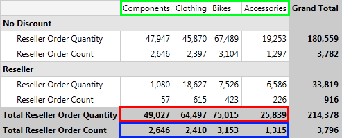

Sorting
In this article we will explain how to use sorting when your data is from OLAP Cube.
Understanding Sorting Mechanism
RadPivotGrid provides different sorting capabilities. You can sort your RowGroupDescriptions and ColumnGroupDescriptions
ascending (from A to Z) and descending (from Z to A) based on the names of the properties they are showing or based on the aggregated description.
With the Q1 2014 SP1 version of Telerik UI for RadPivotGrid provides two additional sorting options.
The data can be sorted by the Olap SortKeys using the new OlapGroupComparer or can be shown the way it has been received from the data source using the SortOrder property set to None.
We will explain this with a simple RadPivotGrid:

The ColumnGroupDescription in this RadPivotGrid is Category. By default the sorting of the columns is ascending (from A to Z) based on the headers:
Accessories, Bikes, Clothing, Components. You can easily change the sorting of the Category ColumnGroupDescription and set it to descending (from Z to A). This will lead to the following result:

The columns are reordered based on their names (check the green rectangle on the top of the image). You can apply sorting based on some of the measures
you are using. In the example above you can apply sorting of the Category ColumnGroupDescription in ascending (from A to Z) or descending (from Z to A) format based on the Total Reseller Order Quantity (red rectangle) or Total Reseller Order Count (blue rectangle).
Here is the new view of RadPivotGrid when the Category ColumnGroupDescription is sorted in descending format based on the Total Reseller Order Count:

The sorting is set on the ColumnGroupDescriptions or RowGroupDescriptions. You cannot set sorting on the AggregateDescriptions, but you can sort
the columns or rows based on the aggregated values.
Sort the data
The sorting can be applied in the XAML, in code behind or even at runtime with the help of RadPivotFieldList.
- Sorting based on the GroupName (header) can be Ascending (from A to Z) or Descending (from Z to A). The default value is Ascending, but you can change it by using SortOrder property:
XAML
<pivot:XmlaGroupDescription MemberName="[Product].[Category]" SortOrder="Ascending">
<pivot:XmlaGroupDescription MemberName="[Product].[Category]" SortOrder="Descending">
C#
XmlaGroupDescription groupDescription = new XmlaGroupDescription();
groupDescription.MemberName = "[Product].[Category]";
groupDescription.SortOrder = Telerik.Pivot.Core.SortOrder.Descending;
VB.NET
Dim groupDescription As New XmlaGroupDescription()
groupDescription.MemberName = "[Product].[Category]"
groupDescription.SortOrder = Telerik.Pivot.Core.SortOrder.Descending
- If you need to avoid the data to be sorted anyhow, you can set the SortOrder property to None. This way the data will appear the way it is was received from the data source:
XAML
<pivot:XmlaGroupDescription MemberName="[Product].[Category]" SortOrder="None">
C#
XmlaGroupDescription groupDescription = new XmlaGroupDescription();
groupDescription.MemberName = "[Product].[Category]";
groupDescription.SortOrder = Telerik.Pivot.Core.SortOrder.None;
VB.NET
Dim groupDescription As New XmlaGroupDescription()
groupDescription.MemberName = "[Product].[Category]"
groupDescription.SortOrder = Telerik.Pivot.Core.SortOrder.None
Note that the SortOrder None property is available with the Q1 2014 SP1 version of Telerik UI for
Silverlight.
- Sorting based on the GrandTotals (measures) can be Ascending or Descending. To set such sort mechanism you have to use the SortOrder and GroupComparer properties:
XAML
<pivot:XmlaGroupDescription MemberName="[Product].[Category]" SortOrder="Descending">
<pivot:XmlaGroupDescription.GroupComparer>
<pivot:GrandTotalComparer AggregateIndex="1"/>
</pivot:XmlaGroupDescription.GroupComparer>
</pivot:XmlaGroupDescription>
C#
XmlaGroupDescription groupDescription = new XmlaGroupDescription();
groupDescription.MemberName = "[Product].[Category]";
groupDescription.SortOrder = Telerik.Pivot.Core.SortOrder.Ascending;
groupDescription.GroupComparer = new GrandTotalComparer() { AggregateIndex = 1 };
VB.NET
Dim groupDescription As New XmlaGroupDescription()
groupDescription.MemberName = "[Product].[Category]"
groupDescription.SortOrder = Telerik.Pivot.Core.SortOrder.Ascending
groupDescription.GroupComparer = New GrandTotalComparer() With {.AggregateIndex = 1}
The AggregateIndex property is set based on the count of your aggregate descriptions. If you have two aggregates the first one will have AggregateIndex = 0 and the second - AggregateIndex = 1.
- Sorting based on the Olap SortKeys can be Ascending or Descending. To set such sort mechanism you have to use the SortOrder and GroupComparer properties:
XAML
<pivot:XmlaGroupDescription MemberName="[Product].[Category]" SortOrder="Descending">
<pivot:XmlaGroupDescription.GroupComparer>
<pivot:OlapGroupComparer />
</pivot:XmlaGroupDescription.GroupComparer>
</pivot:XmlaGroupDescription>
C#
XmlaGroupDescription groupDescription = new XmlaGroupDescription();
groupDescription.MemberName = "[Product].[Category]";
groupDescription.SortOrder = Telerik.Pivot.Core.SortOrder.Ascending;
groupDescription.GroupComparer = new OlapGroupComparer();
VB.NET
Dim groupDescription As New XmlaGroupDescription()
groupDescription.MemberName = "[Product].[Category]"
groupDescription.SortOrder = Telerik.Pivot.Core.SortOrder.Ascending
groupDescription.GroupComparer = New OlapGroupComparer()
Note that the OlapGroupComparer is available with the Q1 2014 SP1 version of Telerik UI for
Silverlight.
Sorting User-defined Hierarchies
OLAP dimensions consist of attribute hierarchies and user-defined hierarchies.
User-defined hierarchies have different levels and with RadPivotGrid you can sort each of the levels. To do this you should use Levels property of XmlaGroupDescription.
Levels property is collection of XmlaLevelGroupDescriptions. Each of the LevelGroupDescriptions has its own MemberName and SortOrder properties:
XAML
<pivot:XmlaDataProvider.RowGroupDescriptions>
<pivot:XmlaGroupDescription MemberName="[Date].[Calendar]">
<pivot:XmlaGroupDescription.Levels>
<pivot:XmlaLevelGroupDescription MemberName="[Date].[Calendar].[Calendar Year]" SortOrder="Descending"/>
</pivot:XmlaGroupDescription.Levels>
</pivot:XmlaGroupDescription>
</pivot:XmlaDataProvider.RowGroupDescriptions>
C#
XmlaGroupDescription topGroupDescription = new XmlaGroupDescription();
topGroupDescription.MemberName = "[Date].[Calendar]";
XmlaLevelGroupDescription levelGroupDescription1 = new XmlaLevelGroupDescription();
levelGroupDescription1.MemberName = "[Date].[Calendar].[Calendar Year]";
levelGroupDescription1.SortOrder = Telerik.Pivot.Core.SortOrder.Descending;
topGroupDescription.Levels.Add(levelGroupDescription1);
VB.NET
Dim topGroupDescription As New XmlaGroupDescription()
topGroupDescription.MemberName = "[Date].[Calendar]"
Dim levelGroupDescription1 As New XmlaLevelGroupDescription()
levelGroupDescription1.MemberName = "[Date].[Calendar].[Calendar Year]"
levelGroupDescription1.SortOrder = Telerik.Pivot.Core.SortOrder.Descending
topGroupDescription.Levels.Add(levelGroupDescription1)
Changing the Sorting at runtime
RadPivotFieldList gives you the ability to change the sorting of a description at runtime. When you click on RowGroupDescription or ColumnGroupDescription
a new popup opens with several sorting options. If you want to save the current sorting, but only change its order (for example the above RadPivotGrid is sorted based on the Total Reseller Order Count in Descending order,
and you want to change it to Ascending) you can use the first two options which are doing exactly this - just changing the SortOrder:

If you want to change the property based on which the sort is applied, then you can use the third option - More Sorting Options. A new RadWindow will be opened in which you can choose
Ascending or Descending order of the sort. When you click the dropdown button you'll see a full list of the possible sorting basis: